Korea Seoul
私の出身は韓国のソウルなのでソウルについて話していきたいと思います！
Korea Hotplace
- ミョンドン
- 汝矣島
- ヨンナムドン
- インサドン
外国人に最も知られている場所です！おみあげの店とか、韓国のグッズがたくさんあります
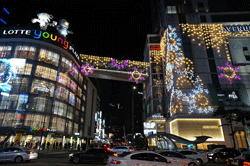 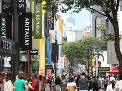 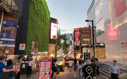ハンガンっていうところでピクニックしたり酒飲んだりすることができます！イベントも多いので 春に行ったら花見を、夏に行ったら花火を見ることができます！
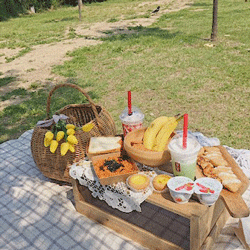 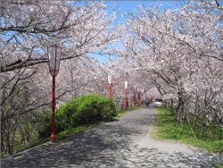
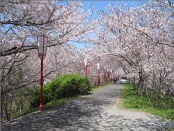
おしゃれなカフェがたくさんある場所です
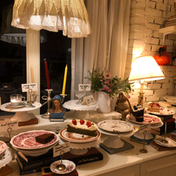 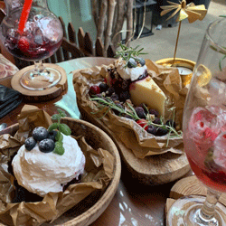 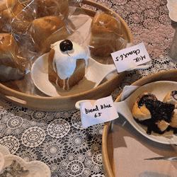 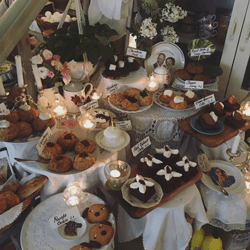韓国の伝統的なものなどを見ることが出来る場所です！チマチョゴリ着て歩いたりすることができます🇰🇷
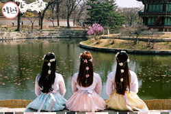Favorite Korea food
- トッポッキ
- タクパル
- チキン
餅とオデンなどが入ってる料理です！味は甘辛いですけど、日本人には辛いかもしれません
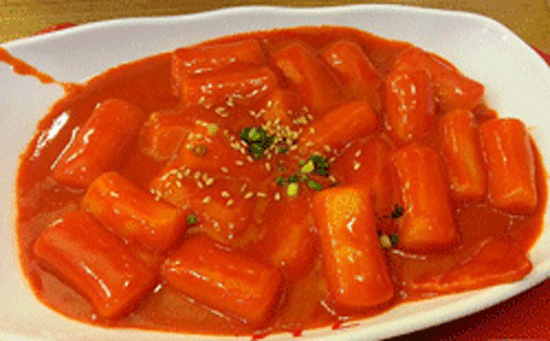雞モミジを辛くした料理です！見た目がキモイから食べれない人も結構いますが、私は大好きです
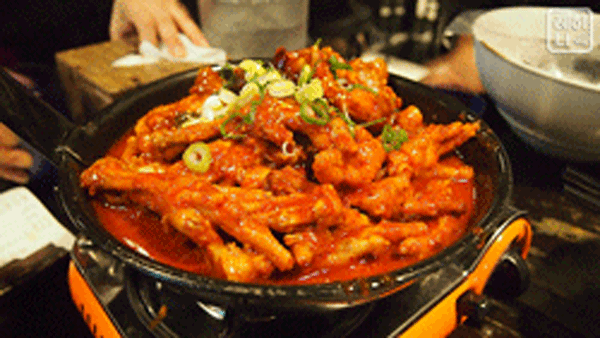韓国のチキンはヤンニョムチキン、チーズチキン、醤油チキン、ハニーチキンなどの様々な味のチキンがあります！
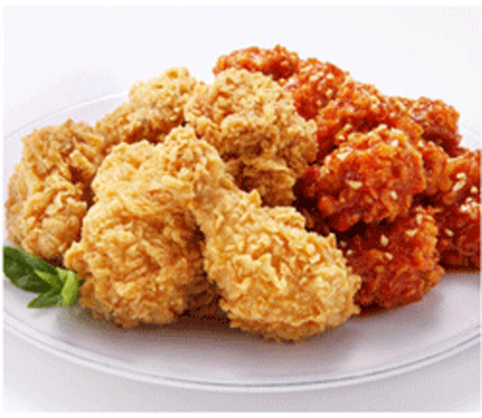